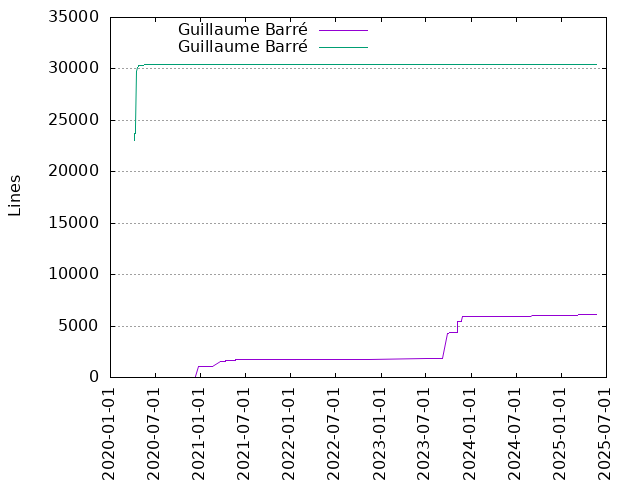
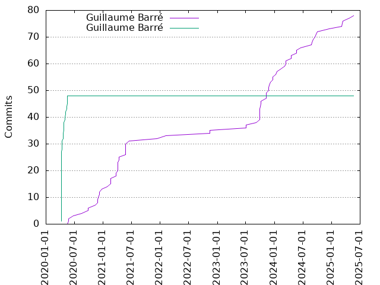

Authors
| Author | Commits (%) | + lines | - lines | First commit | Last commit | Age | Active days | # by commits |
|---|
| Guillaume Barré | 78 (61.90%) | 6164 | 8002 | 2020-05-24 | 2025-05-21 | 1822 days, 19:37:43 | 59 | 1 |
| Guillaume Barré | 48 (38.10%) | 30419 | 19202 | 2020-04-07 | 2020-05-17 | 39 days, 20:32:57 | 17 | 2 |


| Month | Author | Commits (%) | Next top 5 | Number of authors |
|---|
| 2025-05 | Guillaume Barré | 1 (100.00% of 1) | | 1 |
| 2025-04 | Guillaume Barré | 1 (100.00% of 1) | | 1 |
| 2025-03 | Guillaume Barré | 3 (100.00% of 3) | | 1 |
| 2024-12 | Guillaume Barré | 1 (100.00% of 1) | | 1 |
| 2024-10 | Guillaume Barré | 1 (100.00% of 1) | | 1 |
| 2024-09 | Guillaume Barré | 3 (100.00% of 3) | | 1 |
| 2024-08 | Guillaume Barré | 2 (100.00% of 2) | | 1 |
| 2024-06 | Guillaume Barré | 1 (100.00% of 1) | | 1 |
| 2024-05 | Guillaume Barré | 2 (100.00% of 2) | | 1 |
| 2024-04 | Guillaume Barré | 2 (100.00% of 2) | | 1 |
| 2024-03 | Guillaume Barré | 3 (100.00% of 3) | | 1 |
| 2024-02 | Guillaume Barré | 1 (100.00% of 1) | | 1 |
| 2024-01 | Guillaume Barré | 2 (100.00% of 2) | | 1 |
| 2023-12 | Guillaume Barré | 3 (100.00% of 3) | | 1 |
| 2023-11 | Guillaume Barré | 6 (100.00% of 6) | | 1 |
| 2023-10 | Guillaume Barré | 3 (100.00% of 3) | | 1 |
| 2023-09 | Guillaume Barré | 6 (100.00% of 6) | | 1 |
| 2023-07 | Guillaume Barré | 2 (100.00% of 2) | | 1 |
| 2022-11 | Guillaume Barré | 2 (100.00% of 2) | | 1 |
| 2022-02 | Guillaume Barré | 1 (100.00% of 1) | | 1 |
| 2021-12 | Guillaume Barré | 1 (100.00% of 1) | | 1 |
| 2021-06 | Guillaume Barré | 1 (100.00% of 1) | | 1 |
| 2021-05 | Guillaume Barré | 5 (100.00% of 5) | | 1 |
| 2021-04 | Guillaume Barré | 6 (100.00% of 6) | | 1 |
| 2021-03 | Guillaume Barré | 2 (100.00% of 2) | | 1 |
| 2021-02 | Guillaume Barré | 3 (100.00% of 3) | | 1 |
| 2021-01 | Guillaume Barré | 1 (100.00% of 1) | | 1 |
| 2020-12 | Guillaume Barré | 3 (100.00% of 3) | | 1 |
| 2020-11 | Guillaume Barré | 4 (100.00% of 4) | | 1 |
| 2020-09 | Guillaume Barré | 2 (100.00% of 2) | | 1 |
| 2020-08 | Guillaume Barré | 1 (100.00% of 1) | | 1 |
| 2020-06 | Guillaume Barré | 1 (100.00% of 1) | | 1 |
| 2020-05 | Guillaume Barré | 9 (81.82% of 11) | Guillaume Barré | 2 |
| 2020-04 | Guillaume Barré | 39 (100.00% of 39) | | 1 |
| Year | Author | Commits (%) | Next top 5 | Number of authors |
|---|
| 2025 | Guillaume Barré | 5 (100.00% of 5) | | 1 |
| 2024 | Guillaume Barré | 18 (100.00% of 18) | | 1 |
| 2023 | Guillaume Barré | 20 (100.00% of 20) | | 1 |
| 2022 | Guillaume Barré | 3 (100.00% of 3) | | 1 |
| 2021 | Guillaume Barré | 19 (100.00% of 19) | | 1 |
| 2020 | Guillaume Barré | 48 (78.69% of 61) | Guillaume Barré | 2 |
| Domains | Total (%) |
|---|
| ac-versailles.fr | 126 (100.00%) |
|---|